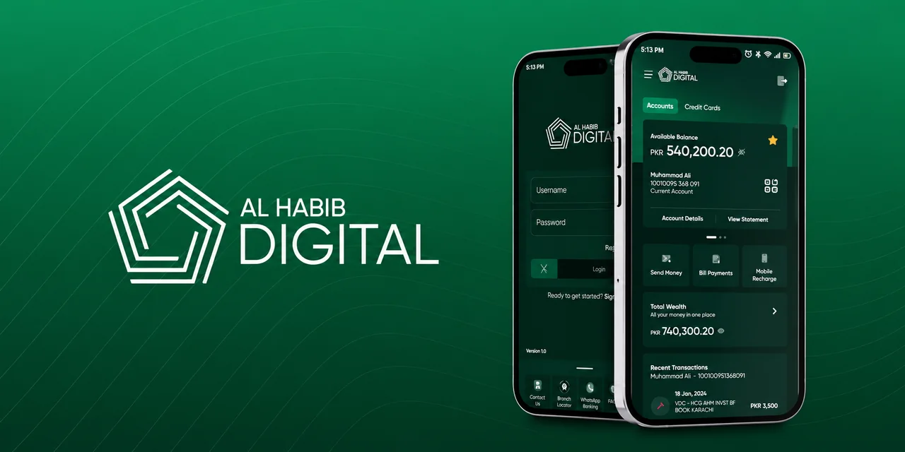

01
Employment contribution · Banking · Kubernetes
Bank AL Habib Digital
- Challenge
- Backend responsiveness, cluster stability, and dependable releases for a business-critical banking platform.
- My work
- Designed primary and disaster-recovery infrastructure; optimized Kubernetes resources and operated Linux, networking, and deployments.
- Outcome
- Improved backend responsiveness, workload stability, and release reliability.